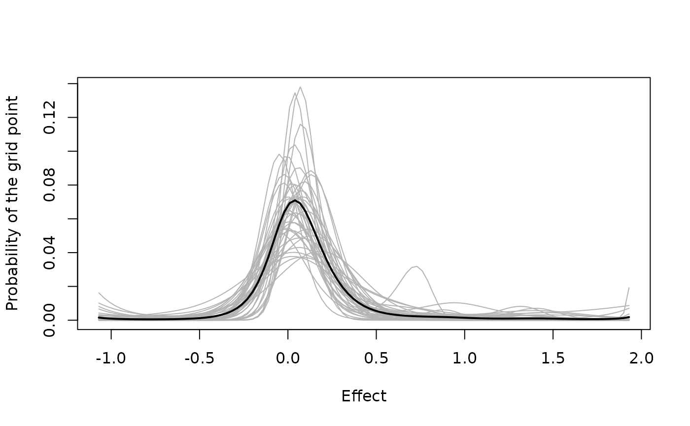

A meta-analysis or a multisite trial yields, for each of \(K\) sites, an estimate \(\hat\theta_i\) of an effect and a standard error \(\sigma_i\). Inference about the true effects \(\theta_i\) can be split into two steps:
- inference from the estimates to the distribution of true effects over sites, and
- inference from that distribution, together with a site’s own estimate, to the true effect of the site.
Step (b) is an application of Bayes’ rule once the distribution is known. Step (a) is the difficult one. The model described here is that of Lee and Sui (2025), who give the derivations and a simulation study.
The deconvolution problem
For sites \(i = 1, \ldots, K\) the model is
\[ \hat\theta_i \mid \theta_i \sim N(\theta_i, \sigma_i^2), \qquad \theta_i \sim g , \]
with the \(\theta_i\) independent. The standard errors \(\sigma_i\) come from the design of each study; they are taken as known and usually differ from site to site. This is the model of a random-effects meta-analysis (Raudenbush and Bryk 1985), except that the distribution \(g\) of true effects is left unspecified.
Each estimate is the sum of a draw from \(g\) and an error, so its density is not \(g\) but \(g\) blurred by a normal density,
\[ f_i(x) = \int \phi(x;\, \theta, \sigma_i)\, g(\theta)\, d\theta , \]
where \(\phi(x; \theta, \sigma)\) is the normal density with mean \(\theta\) and standard deviation \(\sigma\). Recovering \(g\) from data whose distributions are the \(f_i\) is called deconvolution (Efron 2016).
If \(g\) were known, step (b) would be immediate. By Bayes’ rule the posterior density of a site’s effect is
\[ p(\theta_i \mid \hat\theta_i) \propto g(\theta_i)\, \phi(\hat\theta_i;\, \theta_i, \sigma_i) , \]
the product of \(g\) and the likelihood of the site’s own estimate. When \(\sigma_i\) is small the likelihood is narrow and the posterior stays near the estimate; when it is large the posterior is drawn toward the regions where \(g\) puts its probability. How far, and in which direction, depends on the shape of \(g\). That is the idea of empirical Bayes (Robbins 1956): the other sites tell us about \(g\), and \(g\) tells us how to read each site. In this sense \(g\) is the prior distribution of each \(\theta_i\), and the printed output of the package labels it so; the distributions of \(\alpha\) and \(\lambda\) below are priors on the parameters of \(g\).
It is also why \(g\) is of interest in itself. From it follow the proportion of sites whose effects are negligible or large, the effect to be expected in a new site, and the amount of variation between sites.
The difficulty lies in step (a). Blurring loses information: distributions \(g\) that differ a great deal in detail can give nearly the same densities \(f_i\), so the data constrain the detail of \(g\) only weakly, and less so the larger the standard errors. Some assumption about \(g\) is needed to obtain a stable estimate from a few dozen or a few hundred sites.
What to assume about g
The oldest assumption is that \(g\) is normal. Its mean and variance are then the two parameters of the random-effects model, and the posterior mean of a site effect is a weighted average of the site’s estimate and the overall mean. The assumption is convenient and often adequate. It fails, however, when the effects fall into groups, or when a few sites have effects much larger than the rest, because a normal distribution has one peak, is symmetric and has light tails.
At the other extreme no assumption is made, and \(g\) is estimated by maximum likelihood over all distributions (Kiefer and Wolfowitz 1956; Laird 1978). The maximizing distribution is discrete, with no more points of support than there are sites (Lindsay 1995), and it can be computed by convex optimization (Koenker and Mizera 2014). A discrete estimate is awkward when the effects are thought to vary continuously, and quantities such as the probability of an effect above a given size depend on where the few points of support happen to fall.
Between the two are parametric families richer than the normal, such as the mixtures of a point mass at zero with a normal or a Laplace distribution in the ebnm package (Willwerscheid et al. 2025). These suit problems in which most effects are thought to be zero, although, like the normal, they commit to a shape in advance.
Efron (2016) proposed a family that is flexible in shape but has few parameters, and in which \(g\) is smooth. The model of this package uses that family. Lee and Sui (2025, sec. 2) discuss the alternatives at greater length.
The log-spline family
Let \(\tau_1 < \cdots < \tau_L\) be a grid of equally spaced points that covers the values the true effects can plausibly take, and let \(g_j\) be the probability that \(g\) gives to \(\tau_j\). The family is
\[ g_j(\alpha) = \frac{\exp(B_j^\top \alpha)} {\sum_{l=1}^{L} \exp(B_l^\top \alpha)}, \qquad j = 1, \ldots, L, \]
where \(B_j\) is the vector of \(M\) natural cubic spline functions evaluated at \(\tau_j\) (see Hastie et al. 2009 for the splines) and \(\alpha\) is a vector of \(M\) coefficients. The logarithm of \(g\) is thus a smooth function of the effect, described by \(M\) numbers, up to the constant that makes the probabilities sum to one. With \(\alpha = 0\) every grid point has the same probability. Other values of \(\alpha\) give distributions with one or several peaks, with skewness, or with long tails; the larger \(M\), the more shapes are within reach.
A grid distribution stands in for a continuous one. With a fine grid
the sum \(\sum_j g_j\, \phi(x; \tau_j,
\sigma_i)\) is close to the integral that defines \(f_i\), so little is lost as long as the
spacing of the grid is small compared with the standard errors. The
defaults are \(L = 101\) points and
\(M = 6\) spline functions, as in the
application of Lee and Sui (2025).
vignette("choosing-a-grid") discusses both choices and the
placing of the grid.
The spline basis has no constant term, because adding a constant to
every \(B_j^\top \alpha\) leaves \(g\) unchanged, so that the coefficient of a
constant column could not be determined by the data. The basis is
computed by splines::ns(grid, df = M, intercept = FALSE),
and make_efron_grid() verifies that the columns of \(B\) together with a constant column are
linearly independent, stopping with an error if they are not.
The columns of \(B\) are used as
ns() returns them, as in the code that accompanies Lee and Sui (2025).
The deconvolveR package (Narasimhan and Efron 2020) by
default centers each column and scales it to a sum of squares of one, so
the coefficients of the two packages are on different scales, which
matters for the prior distribution described next.
The prior on the coefficients
Six coefficients estimated from a few dozen sites need restraint, or the estimated \(g\) follows the accidents of the sample. Efron (2016) restrains them with a penalty of fixed size in the likelihood. Here the restraint is a prior distribution whose strength is itself estimated:
\[ \alpha_m \mid \lambda \sim N(0,\, 1/\lambda), \quad m = 1, \ldots, M, \qquad \lambda \sim \mbox{half-Cauchy}(0, 5) . \]
The second argument of the normal distribution is a variance, so the coefficients have standard deviation \(\lambda^{-1/2}\). A large \(\lambda\) holds the coefficients near zero, and \(g\) near the uniform distribution on the grid. A small \(\lambda\) lets them move, and \(g\) take whatever shape the likelihood favors. Because \(\lambda\) has a prior of its own, its value is estimated along with the coefficients. Six coefficients carry little information about it, however, and its posterior distribution is wide, as the output below shows.
The half-Cauchy distribution is the choice of Lee and Sui (2025). Gelman (2006) proposed it as a prior for the standard deviation of the effects in a hierarchical model with few groups. Here it is placed on the precision, which implies a different prior for the standard deviation \(\lambda^{-1/2}\) of the coefficients: one with median 0.45 that gives probability 0.13 to values above 1 and 0.03 to values below 0.1. Lee and Sui (2025, Appendix D) replaced it by other families and other scales in a simulation, fitted with a variational approximation, and report that the estimates of the site effects and the coverage of their intervals changed little.
For the teacher expectancy studies the posterior distribution of \(\lambda\) is concentrated on small values, that is, on coefficients that are free to move.
draws <- posterior::as_draws_matrix(fit)
lambda <- as.numeric(draws[, "lambda"])
quantile(lambda, c(0.05, 0.5, 0.95))
#> 5% 50% 95%
#> 0.003969845 0.059235962 0.332104884
quantile(1 / sqrt(lambda), c(0.05, 0.5, 0.95))
#> 5% 50% 95%
#> 1.735252 4.108756 15.871818The second line is the standard deviation of the coefficients.
The full model and what is sampled
Put together, the model has four parts,
\[ \begin{aligned} \hat\theta_i \mid \theta_i &\sim N(\theta_i, \sigma_i^2), \\ P(\theta_i = \tau_j \mid \alpha) &= g_j(\alpha), \\ \alpha_m \mid \lambda &\sim N(0,\, 1/\lambda), \\ \lambda &\sim \mbox{half-Cauchy}(0, 5), \end{aligned} \]
and each quantity depends only on the one before it: \(\lambda \rightarrow \alpha \rightarrow g \rightarrow \theta_i \rightarrow \hat\theta_i\).
Because each \(\theta_i\) takes values on the grid, it can be summed out and need not be sampled, which gives the likelihood of the coefficients,
\[ p(\hat\theta \mid \alpha) = \prod_{i=1}^{K} \sum_{j=1}^{L} g_j(\alpha)\, \phi(\hat\theta_i;\, \tau_j, \sigma_i) . \]
The sampler therefore works in \(M +
1\) dimensions, \(\alpha\) and
\(\lambda\), whatever the number of
sites. The number of sites enters only through the cost of computing the
likelihood, which is that of \(K \times
L\) normal densities computed once and a matrix product at each
step. Sampling is by the No-U-Turn sampler of Stan (Hoffman and Gelman
2014; Carpenter et al.
2017). The logarithm of the likelihood is stored for each
draw as log_marginal_likelihood. The name refers to the
true effects, which have been summed out; it is not the marginal
likelihood of the model, in which \(\alpha\) and \(\lambda\) would be integrated out as
well.
The result is a set of draws \(\alpha^{(1)}, \ldots, \alpha^{(S)}\) from the posterior distribution of the coefficients, and with them draws \(g(\alpha^{(s)})\) of the distribution of effects. Step (a) thus ends not with one estimate of \(g\) but with a posterior distribution over \(g\).
grid <- fit$metadata$data_list$grid
g <- exp(draws[, sprintf("log_g[%d]", seq_along(grid))])
g <- matrix(as.numeric(g), nrow = nrow(g))
some <- round(seq(1, nrow(g), length.out = 40))
matplot(grid, t(g[some, ]), type = "l", lty = 1, col = "gray70",
xlab = "Effect", ylab = "Probability of the grid point")
lines(grid, colMeans(g), lwd = 2)
The gray lines are 40 of the posterior draws of \(g\) for the teacher expectancy studies and the black line is their mean. All of them have a peak near zero. They differ in how sharp the peak is and in how much probability they give to the right tail, which 19 studies cannot settle.
The posterior distribution of a site effect
For a given \(\alpha\), Bayes’ rule on the grid gives the posterior probabilities of the effect of site \(i\),
\[ w_{ij}(\alpha) = \frac{g_j(\alpha)\, \phi(\hat\theta_i;\, \tau_j, \sigma_i)} {\sum_{l=1}^{L} g_l(\alpha)\, \phi(\hat\theta_i;\, \tau_l, \sigma_i)}, \]
and from them a mean \(\sum_j w_{ij} \tau_j\), a variance and a mode. This is step (b) for one candidate \(g\). An empirical Bayes analysis stops here, with \(\alpha\) replaced by an estimate.
The posterior distribution of \(\theta_i\) given the data averages over the uncertainty about \(g\):
\[ P(\theta_i = \tau_j \mid \mbox{data}) = \int w_{ij}(\alpha)\, p(\alpha \mid \mbox{data})\, d\alpha \approx \frac{1}{S} \sum_{s=1}^{S} w_{ij}(\alpha^{(s)}) . \]
For every draw \(\alpha^{(s)}\) the
Stan program computes the mean, the standard deviation and the mode of
\(w_{i\cdot}(\alpha^{(s)})\), stored as
theta_mean, theta_sd and
theta_map, and draws one value of \(\theta_i\) from it, stored as
theta_rep. The values of theta_rep are draws
from the posterior distribution of \(\theta_i\) given the data.
coef() returns the average of theta_mean,
which is the posterior mean, and confint() returns
quantiles of theta_rep. The posterior mode,
coef(type = "map"), is the grid point at which the averaged
probabilities \(P(\theta_i = \tau_j \mid
\mbox{data})\) are largest.
The posterior variance has two parts,
\[ \mbox{Var}(\theta_i \mid \mbox{data}) = E\{\mbox{Var}(\theta_i \mid \alpha)\} + \mbox{Var}\{E(\theta_i \mid \alpha)\} , \]
where the expectation and the variance outside the braces are over the posterior distribution of \(\alpha\). The first part is the uncertainty about the effect that would remain if \(g\) were known. The second is the uncertainty about \(g\) as it bears on this site. An analysis that plugs in an estimate of \(g\) omits the second part, so its intervals tend to be too narrow (Lee and Sui 2025, sec. 3.4 and Appendix A).
site_draws <- function(name) {
x <- draws[, sprintf("%s[%d]", name, seq_len(nobs(fit)))]
matrix(as.numeric(x), nrow = nrow(x))
}
theta_mean <- site_draws("theta_mean")
theta_sd <- site_draws("theta_sd")
parts <- data.frame(
sei = raudenbush1985$sei,
given_g = sqrt(colMeans(theta_sd^2)),
about_g = apply(theta_mean, 2, sd)
)
parts$posterior_sd <- sqrt(parts$given_g^2 + parts$about_g^2)
round(parts[c(4, 10, 17, 18), ], 3)
#> sei given_g about_g posterior_sd
#> 4 0.373 0.398 0.299 0.498
#> 10 0.251 0.249 0.180 0.307
#> 17 0.139 0.114 0.045 0.122
#> 18 0.094 0.079 0.018 0.081The rows are four of the teacher expectancy studies.
given_g is the square root of the first part,
about_g is the square root of the second and
posterior_sd is the posterior standard deviation. The
second part is small for study 18, whose estimate is precise and near
the peak of \(g\). It is far from small
for studies 4 and 10, whose large estimates fall in the tail, where the
draws of \(g\) disagree.
posterior_sd is the column sd that
summary() prints for each site.
In the simulations of Lee and Sui (2025, sec. 6), in which the true effects
of 1,500 sites formed two groups, 90% intervals from this model covered
the true effects 88% to 91% of the time.
vignette("implementation") reports a check of the same kind
with this package for 50 to 1,500 sites.
Summaries of g
Every draw of \(g\) has a mean, a variance and a standard deviation,
\[ \mu(\alpha) = \sum_{j} g_j(\alpha)\, \tau_j, \qquad v(\alpha) = \sum_{j} g_j(\alpha)\, \{\tau_j - \mu(\alpha)\}^2 , \]
stored as mean_g, var_g and
sd_g. Their posterior distributions answer the questions
that the mean and the between-site standard deviation answer in a
random-effects model, without the assumption of normality;
confint(fit, type = "g") summarizes them. Other features of
\(g\), such as the probability of an
effect above a given value, are found from draws of
predict().
The fit also reports an effective number of parameters, which is not in the paper. For a given \(\alpha\) it is
\[ \sum_{i=1}^{K} \frac{\mbox{Var}(\theta_i \mid \alpha)}{\sigma_i^2} . \]
In the normal model each term is the weight that the posterior mean
gives to the site’s own estimate, so the sum counts how many estimates’
worth of information the sites keep for themselves: near \(K\) when the estimates are hardly drawn
together, near zero when they are drawn to a common value. With a
general \(g\) a term can exceed one,
and the sum is a rough guide. It is a different quantity from the
p_loo that loo() reports under the same name
(see vignette("choosing-a-grid")).
unlist(fit$metadata$effective_params_summary)
#> mean sd q5 q50 q95
#> 10.293390 2.839847 4.855205 10.759065 14.301301For the 19 studies the posterior mean is about 10.
logLik() returns the posterior mean of
log_marginal_likelihood with this number as its degrees of
freedom. Because that is not a maximized log likelihood,
AIC() and BIC() computed from it do not have
their usual meaning, and fits are better compared with
loo().